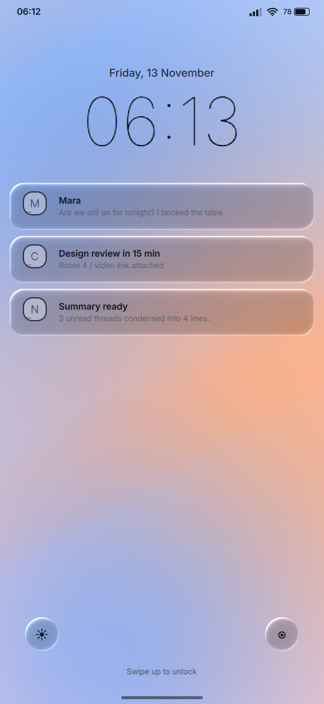
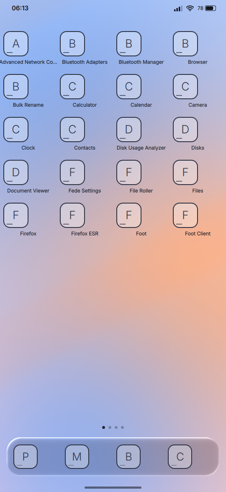

Early prototype · MIT licensed
A desktop environment for phones.
FlowDE is a mobile desktop environment for Linux, made by Achilles and part of the Kiln GNU/Linux family. It has small Rust services, a Qt shell and a Wayland compositor. The default look is Liquid Glass.

Parts
FlowDE is split into small services. The shell talks to them over D-Bus and a control socket, so any of them can be replaced or turned off.
- KilnLock
- The lock screen: auto-lock, a passcode stored as an Argon2id hash, and a hook for biometrics.
- KilnNotifs
- Notifications with history, grouping and do-not-disturb.
- KilnDM
- Login and sessions. At login you pick FlowDE or the FeDe desktop.
- KilnWall
- Wallpapers, with light and dark variants and one per display.
- NoxalAi
- A local assistant based on Qwen. It runs on the phone, and only when battery and temperature allow.
- FlowStore
- Finds, installs and removes apps.
- FlowDLP
- A download queue in the style of yt-dlp, with progress and resume.
- KilnDesktop
- Dock the phone and it starts the full FeDe desktop, much like Samsung DeX.
Looks
Liquid Glass is the default. Minimalist, MaterialYou and Anthropic Design are the alternatives, and you can switch at any time. Icon packs are a separate choice.
The glass material uses blur, refraction at the edges and a highlight along the rim. When the battery or the temperature is a problem, it drops to plain blur, and then to flat surfaces. The reduce-transparency, contrast and reduce-motion settings always take priority.
Stack
- Shell
- Qt 6 and QML. Glass is drawn with shaders, and touch and gestures are handled here.
- Services
- Rust daemons, kept small to suit a phone.
- Compositor
- Rust on Smithay, with edge gestures and screen rotation.
Status
FlowDE is young and nothing is released.
Exists
- A service scaffold in Rust, with tests
- A shell prototype with a lock screen, home screen, app switcher and notification shade
- The glass material and four themes
In progress
- Real service behaviour on a device
- A mobile mode for the compositor
- The NoxalAi runtime
Not started
- Phone images and installers
- The standalone apps
- Packages
